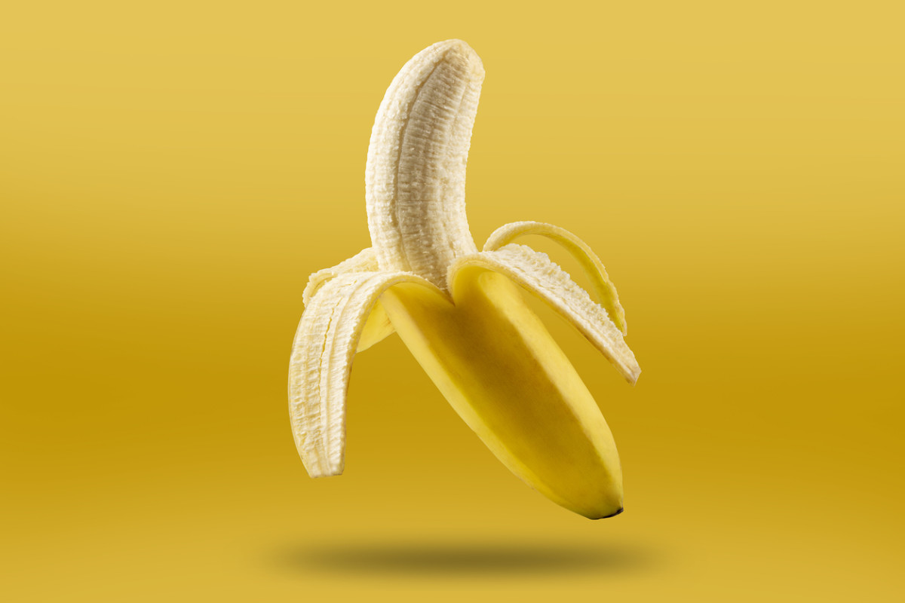

ვაშლი არა მხოლოდ გემრიელია, არამედ წარმოუდგენლად მკვებავიც. ისინი მდიდარია ბოჭკოებით, ანტიოქსიდანტებით და C ვიტამინით, რაც ხელს უწყობს იმუნური სისტემის გაძლიერებას. მე მიყვარს ვაშლის ხრაშუნა და გამაგრილებელი გემო, იქნება ეს ახალი მიირთმეული თუ სხვადასხვა რეცეპტებში, როგორიცაა ვაშლის ღვეზელი ან ვაშლის სოუსი..
ბანანი

ბანანი არის კალიუმის ფანტასტიკური წყარო, რომელიც აუცილებელია გულის სწორი ფუნქციონირებისა და კუნთების ჯანმრთელობის შესანარჩუნებლად. მე მიყვარს ბანანი, როგორც სწრაფი და მოსახერხებელი საჭმელი, ასევე ისინი ბუნებრივ სიტკბოს და კრემს მატებენ სმუზიებსა და დესერტებს..
ატამი
ატამი არის ტროპიკული ხილი ტკბილი და ტკბილი არომატით, რომელიც მე აბსოლუტურად მიყვარს. ისინი შეფუთულია A და C ვიტამინებით, რაც ხელს უწყობს ჯანსაღ კანს და იმუნურ ფუნქციას. მიირთმევთ ახალს თუ შერეულს სმუზისა თუ სალსაში, მანგო ყოველთვის მზიან დღეებს და ტროპიკულ ატმოსფეროს მახსენებს..